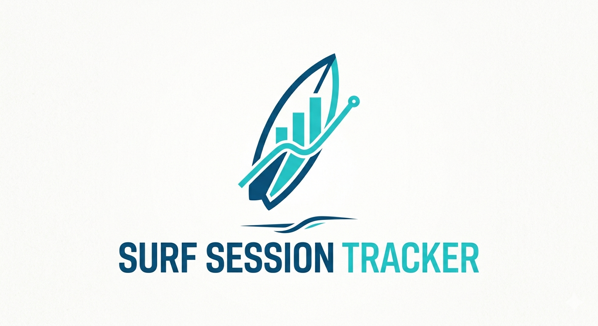
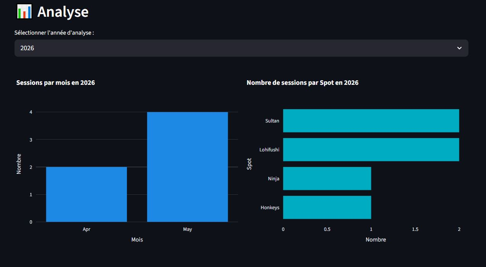
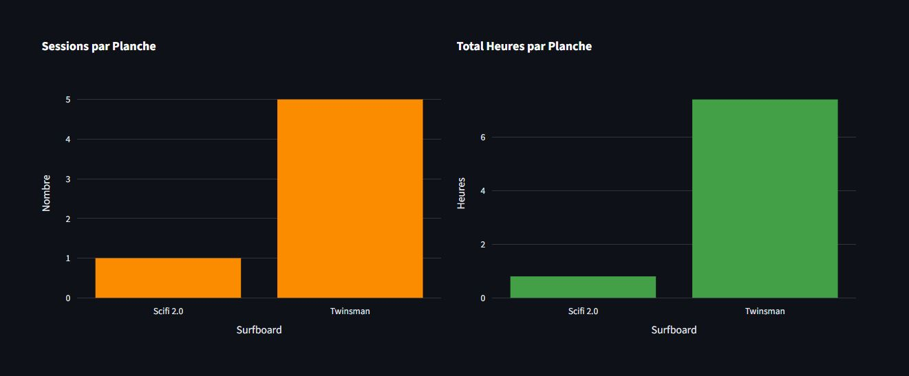
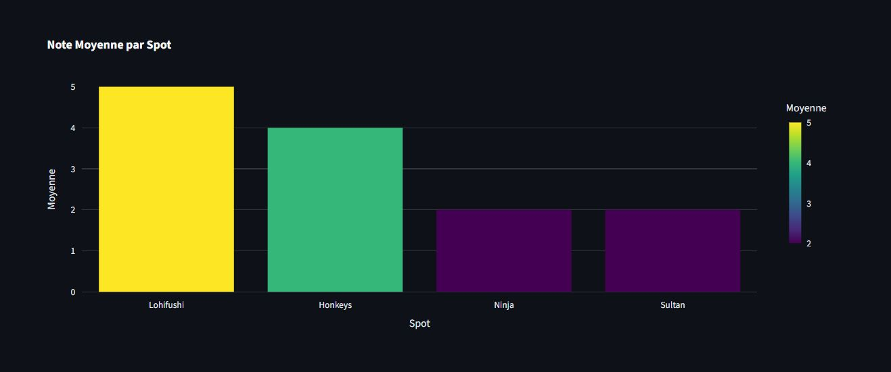

Visualises tes sessions
par mois et par spot
Les données s'accumulent au cours du temps et seront visibles sur l'ensemble d'une année.
Rien de plus simple: tu sélectionnes la date de ta session, tu saisies le lieu,
le spot, ta board et tu notes ta session!


Les données s'accumulent au cours du temps et seront visibles sur l'ensemble d'une année.

Et le nombre d'heures que tu as surfé ta board préférée!

Score tes sessions sur 5: quel sera ton spot préféré à la fin de l'année?!